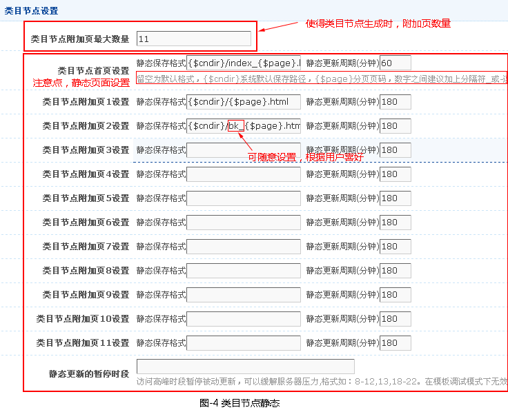
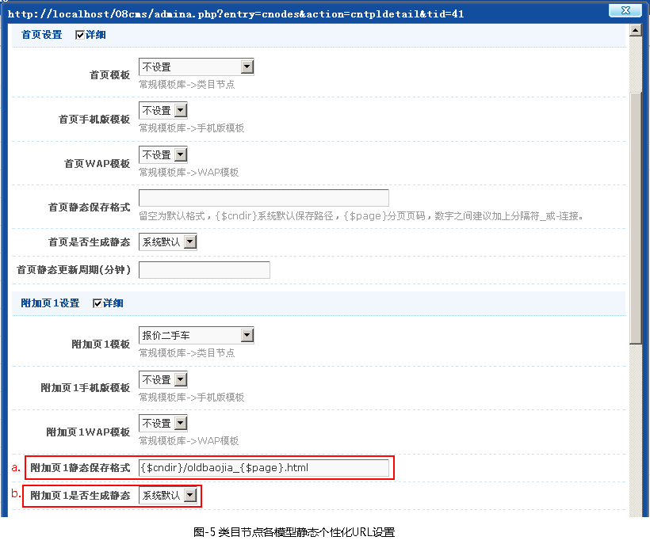

一、类目节点静态设置
-
类目节点静态的设置，有两种方法：
第一种：系统类目节点设置（1.1），在〖系统设置〗->〖网站参数〗->〖页面设置〗->类目节点设置中设置。
第二种：节点配置中静态保存格式设置（1.2），在〖网站架构〗->〖类目节点〗->〖节点配置管理〗->选择某已有节点->〖详情〗中设置。
这两种方法存在优选权：[节点配置中静态保存格式设置]优先于[系统类目节点设置]
- 1.1 系统类目节点设置(如图-4)
-
〖系统设置〗->〖网站参数〗->〖页面设置〗->类目节点设置

- 1.2 节点配置中静态保存格式设置(如图-5)
-
〖网站架构〗->〖类目节点〗->〖节点配置管理〗->选择某已有节点->〖详情〗

a.静态保存格式的设置方法：
留空为默认格式，{$cndir}系统默认保存路径，{$page}分页页码，数字之间建议加上分隔符_或-连接。
① {$cndir}必选。
② XXX(自定义)_{$page}.html 可以自由组合但必须保证不同的文档URL为不同原则，此项为必填。
③ 同一设置内的XXX(自定义)名称不能相同。
b.是否生成静态：系统默认和保持动态，系统默认是指〖系统设置〗->〖网站参数〗->〖页面设置〗->静态综合设置中是否启用静态，若是“是”，则默认就是启动静态，反之就是动态；保持动态就是一直保持着动态。
二、生成类目页静态
- 在设置好类目页静态参数时，就可以进行首页静态的生成（〖其他管理〗->〖页面静态〗->〖类目页静态〗），如图-6所示。

a.〖被动生成静态〗是当用户点击前台页面时，系统自动生成一个该访问静态页面（第一次点击是动态形式展示，当第二次再点击这个页面时就是静态页面了，以后就会按规则设定的时间自动对已有的静态进行更新;），在网站正常运营期建议使用此设置，系统会自动生成静态页，避免大批量生成静态页面时对服务器资源的消耗。
b.〖主动生成静态〗是管理员主动直接生成前台静态页面; 当网站建设完成，开始正常运营前建议使用一次。一般情况下不建议使用此操作。
c.〖修复静态链接(补缺)〗给[被动生成静态] 生成静态预设静态规则的静态地址，对已先前已生成的静态地址将不在生成，防止以下情况前台生成静态时会出现页面不存在现象。
① 在未启动静态时添加的文章，之后再启动静态。
②静态文件被手动删除。
d.〖修复静态链接(重写) 〗：在以述3的情况下，强制生成所有的预设静态规则的静态地址，发下情况必须用此项。
e.〖加入进程〗：与"立即执行"是静态操作的两种模式，通过加入进程并启动进程，利于长时间的无人值守操作。